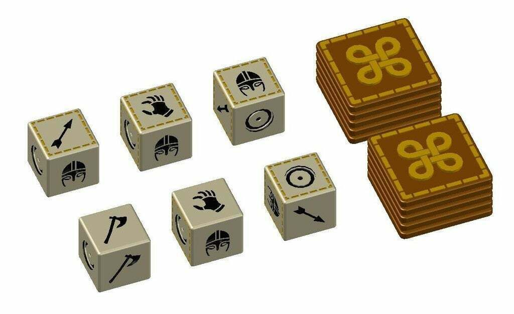

| ¿QUÉ ES EL ORLOG? | REGLAS | INSTRUCCIONES DE FABRICACIÓN |
|---|
REGLAS
Como con cualquier juego, el objetivo de Orlog es derrotar a tu oponente. En este caso, debes eliminar todos sus puntos de vida que se representan con piedras y son 20 inicialmente. El juego comienza con el lanzamiento de una moneda para ver quién lanza los dados primero. Cada jugador toma turnos para tirar sus 6 dados y quedarse los que le interesa. Puede retirar dados hasta tres veces. Después de las tres tiradas, se calcula el Favor de los Dioses que cada jugador haya ganado. A continuación ocurre la fase de resolución donde recontamos el daño y protecciones ganadas con los dados que hemos elegido. Hay cinco caras de dados diferentes que puedes lanzar en Orlog:

Favor de los Dioses
El Favor de los Dioses se utiliza al final de la fase de resolución y tiene diferentes aplicaciones. Se necesitan los tokens suficientes para activar
cada favor y en esta tabla se especifican sus efectos.
| Dios | Efecto | Tokens de activación |
|---|---|---|
| Martillo de Thor | 2/5/8 puntos de daño al oponente | 4/8/12 |
| Garra de Hel | Ganas 1/2/3 puntos de vida | 6/12/18 |
| Poder de Vidar | Elimina 2/4/6 Cascos del oponente | 2/4/6 |
| Vigilancia de Heimdall | Ganas 1/2/3 puntos de vida por cada bloqueo | 4/7/10 |
| Caza de Skadi | Añade 1/2/3 flechas a cada dado de flechas | 6/10/14 |
| Abundancia de Freya | Tira 1/2/3 dados adicionales | 2/4/6 |